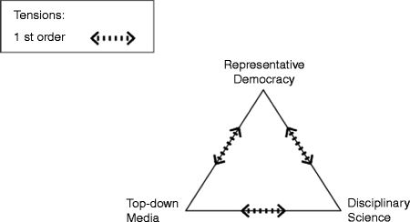
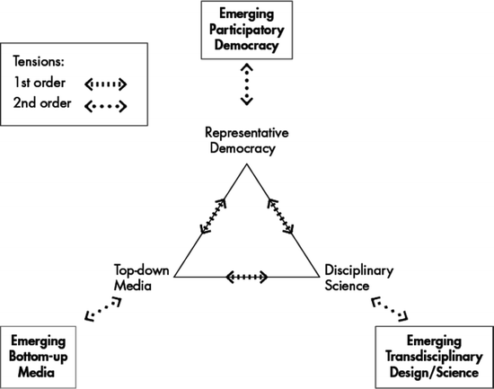

1.1 Introduction
Since the introduction of the concept of knowledge democracy with the meaning of enabling a new focus on the relationships between knowledge production and dissemination (in ’t Veld 2010a), the functioning of the media and the evolution of our democratic institutions and processes, we have seen remarkable proof of the vitality of the concept. The concept obliges us to realise that the institutional frameworks of today’s societies may appear to be deficient as far as the undercurrents, trends and other developments demand change. Reconsidering the events in 2011 in the Maghreb, the Middle East and some other regions, the crucial role of social media besides phenomena of participatory democracy demand our attention.
Democracy is without any doubt the most successful governance concept for societies during the two last centuries. It is a strong brand, even used by rulers who do not meet any substantial democratic criterion. Representation gradually became the predominant mechanism by which the population at large, through elections, provides a body with a general authorisation to take decisions in all public domains for a certain period of time. Representative parliamentary democracy became the icon of advanced nation-states.
The recent decline of representative parliamentary democracy has been called upon by many authors. On the micro-level the earlier consistent individual position of an ideologically-based consistent value pattern has disappeared. The values are present but the glue of a focal ideological principle is not any longer at stock. Fragmentation of values has led to individualisation, to uniqueness but thereby also to the impossibility of being represented in a general manner by a single actor such as a member of parliament. More fundamentally media-politics destroy the original meaning of representation. On the meso-level the development of political parties to marketeers in the political realm destroys their capacity for designing consistent broad political strategies. Like willow trees they move with the winds of the supposed voters’ preferences. And on the macro-level media-politics dominate. Volatility therefore will probably increase.
The debate on the future of democracy has not yet led to major innovations in advanced national societies in Europe, contrary to sweeping innovation elsewhere. Established political actors try to tackle populism with trusted resources: a combination of anti-populist rhetoric and adoption of the populist agenda. Some of the media have responded by attempting to become ‘more populist than populists themselves’, almost always at the expense of analytical depth. In other parts of the world the longing for democracy leads to sweeping movements.
The development in different parts of the world partially points in a variety of directions: city government in parts of South America is characterised by remarkable citizens’ participation in many cases, while in Asia the rule of law is introduced without classical democracy in influential nations. The recent developments in the Middle East still await thorough evaluation.
Meanwhile, the worldwide web as well as the evolution of social media provides for a drastic change in the rules of the game. A better educated public has wide access to information, and selects it more and more by itself, instead of relying on media filters as produced by classical media. Moreover citizens themselves have become media. They may produce, in some cases soon world-famous, YouTube videos at home or down town. Even more, social media have to the surprise of many shown to be of decisive importance in drastic changes of government and governance in several North-African states in 2011.
The relationships between corporate, top-down media and politics may change considerably as a consequence of the rise of social media because politicians may utilise social media in order to create direct communication with voters, so their dependence on the top-down media diminishes. The corporate media are not any longer the necessary, only intermediaries between politicians and voters. Nevertheless, people get tired of social media already too, because the latter produce also much pulp, and the costs of finding trustworthy information are high; confusion and ambiguity are all over the place. The crucial combination of a network society and media-politics provides new problems and tensions. The political agenda is increasingly filled with so-called wicked problems, characterised by the absence of consensus both on the relevant values and the necessary knowledge and information. Uncertainty and complexity prevail.
Today’s societies are characterised by an increasing intensity and speed of reflexive mechanisms. Reflexive mechanisms in a more or less lenient political environment cause overwhelming volatility of bodies of knowledge related to social systems. As all available knowledge is utilised to facilitate reflexive processes, the result of such processes might establish new relationships that undermine the existing knowledge. Social reality has thus become unpredictable in principle.
Voß and Kemp in their introductory chapter to Reflexive Governance to Sustainable Development (2006) deal with reflexivity and distinguish first- and second-order reflexivity. First-order reflexivity
refers to how modernity deals with its own implications and side effects, the mechanism by which modern societies grow in cycles of producing problems and solutions to these problems that produce new problems. The reality of modern society is thus a result of self-confrontation. (Voß and Kemp 2006: 6).
Second-order reflexivity concerns ‘the cognitive reconstruction of this cycle’. It ‘entails the application of modern rational analysis not only to the self-induced problems but also to its own working, conditions and effects’. It may be clear that we mainly deal with second-order reflexivity in the terminology of Voß and Kemp.
The relationships between science and politics demand new designs in an environment of media-politics, wicked problems and reflexivity. The classical theory on boundary work as published by Jasanoff and others in order to master the existing gaps between science and politics is nowadays widely accepted among experts. The underlying insight is that scientific knowledge by its very structure never directly relates to action, because it is fragmented, partial, conditional and immunised. This observation is valid for both mono- and multi- disciplinary knowledge. Thus, translation activities are always necessary in order to utilise scientific knowledge for policy purposes.
The literature on transdisciplinary research is dominated by process-directed normative studies. It appears to me that the core concept of transdisciplinarity is to be defined as the trajectory in a multi-actor environment from both sources: from a political agenda and existing expertise, to a robust, plausible perspective for action.
In the third part of the chapter we reflect upon the specific consequences of the mixing of governance of sustainability and knowledge democracies. The final part of this chapter is devoted to observations on quiet and turbulent democracies as very different typologies of potential evolutionary patterns of knowledge democracy.
1.2 Sustainable Development
We consider our world through the veils of fundamental normative perspectives that shape our beliefs, our inspiration and our actions. One of the many disputes between Plato and Aristoteles concerned the question whether mankind is either part of nature or has a subject-object relation to nature. The anthropocentric character of the concept of nature became gradually stronger in the Western world. The Christian religion defined the duty of men towards nature as stewardship, Verwalterstelle, but did seldom practice it. The era of Aufklärung, Enlightenment has delivered the perspective of humankind as the master of the universe, with the perspective of a world governed by reason and by science. But the shadow of Faust was always near. More recently the metaphor of the exhaustion of the earth, caused by human irresponsibility, has come to the forefront in disputes. Economic growth then may be sinful. Perez-Carmona treats this issue more fundamentally in Chap. 3 of this volume. On the other side of the spectre, commentators consider technological innovation as the great liberator of the human race, because it will eradicate poverty, hunger and many other shortcomings.
Statistics indicate that we on the average live longer and in better health than ever before, but the pursuit of happiness relates to more than statistics. Our values on distributive justice urge us to pay attention to differences. Many of the normative perspectives on the environment are formulated in terms of threats that demand immediate action. While increasing wealth appears to reduce the willingness to accept risks of wealthy people, these threats are shaped as extreme risks.
It has been generally accepted nowadays that mankind is able to bring about irreversible change that partially diminishes the options of future generations. The normative insight derived from this principle is formulated as the precautionary principle. This principle leads to the norm that we should abstain from action that reduces the valuable future options for choice. Moreover the concept of sustainability now concerns the three major dimensions of human societies, the economic, social and ecological dimension, collected as the three P’s people, planet, profit. Van Londen and De Ruijter (2011: 10) define the concept of sustainable development as the reconciliation of three imperatives: (a) the ecological imperative, to remain within planetary bio-physical carrying capacity; (b) the economic imperative, to ensure an adequate material standard of living; and (c) the social imperative, to provide social structures – including systems of governance – that effectively propagate and sustain the values that people want to live by, in order to maximise human welfare.
The reconciliatory character of sustainable development raises specific questions as to the judgment on changes that lead to improvement in two dimensions but to deterioration in the third. Until now we lack a satisfactory interdimensional measuring rod in order to judge upon this type of changes. This deficiency is serious because as a consequence we are unable to provide convincing criteria to judge upon policy options in a comparative manner.
Many different dialogues about sustainable development take place simultaneously: cities, states, enterprises and families discuss sustainable development in their own specific environment. They use common words, but in various rationalities. Sustainable development is a container notion. The use of the singular form fits in holistic viewpoints. The supporters of these viewpoints speak about the climate, the earth, the emissions, the planetary boundaries (Meuleman 2010b). All of these are at stake, and disasters threaten. Such constructs enable us subsequently to deal with a global challenge that should be met in a well-coordinated manner. Thus, the normative construction of the problematique leads to a specific line of argumentation on governance. The supporters of this view may be found in international organisations that make continuous efforts to produce consensus on international binding agreements, in order to prevent disasters. Basic metaphors like the exhaustion of the earth, and planetary boundaries, then are very useful.
However, people do not experience the climate but a climate in the neighbourhood. They pursue a good life according to their own values and in many cases try to find a satisfactory relationship to the surrounding nature. Their visible world is not abstract or systemic but specific and concrete. Likewise, until a few years ago, climatologists distinguished many different climates. Entrepreneurs make attempts to design and apply more sustainable technologies. They act in a specific environment too, not in an abstract universe. So Perceptions are not only context-bound but also acceptable ways of dealing with problematic issues. Thus, major discrepancies may exist here between the systemic world on one hand and the daily life world on the other.
The Western world has developed environmental policies during the last half century. In the international realm younger nation-states, often former colonies, more recently also become aware of the disagreeable side effects of economic growth. They want to counterbalance these effects in their own manner. In the diplomatic arena they however are confronted continuously with urgent calls to participate in bargaining processes on treaties with the former colonial powers. These partners now urge for dramatic reductions of emissions and the like. Quota for a certain future year are symbols of urgency. The young nation that is coping with the need for reduction of backwardness in technologies and is just starting to think about clean technologies will not feel inspired by the short term limits set by others. It will experience those as unnatural.
Moreover, the language of international traditional diplomacy would not necessarily be accepted by all relevant actors because some could interpret this language as an expression of hegemony by former colonial powers. Cultural diversity should be recognised both as a component of sustainability and as a complicating factor, that prohibits progress in reaching consensus on collective action. Meuleman devotes a chapter in this book to these questions (Chap. 2).
A society needs a certain cohesion, that is produced as a moral order, based on consensus on some fundamental values and norms. Therefore, culture within a society is also the sharing of some common substantial and relational values. A society consists of configurations. A configuration possesses a specific culture but as observed earlier, this leads to outside walls, and tensions arise. In particular the tensions between emerging identities on one side, accompanied necessarily by outer walls, and the need for cohesion and collective action on the other will never disappear. Shaping governance thus is walking a high wire.
We should argue that biodiversity and cultural diversity both are components of sustainability. We may mourn about the loss of a language somewhere on this globe as about the loss of a species. But our general attitude towards cultural diversity in daily practice is far more critical than towards biodiversity. We do not believe that each culture is intrinsically good. On the contrary, some cultures are horrifying to many. As sustainability also implies the economic and social dimension, we realise that ‘diversity always is a bedfellow of inequality’ (Van Londen and De Ruijter 2011: 14). Inequality might be a threat to sustainable development, so our attitude towards cultural diversity is ambiguous.
According to the concept of second modernity (Beck 1992) it is probable that from the tense relations between emerging opposites variety increases. Striving at sustainable development urges us to take these tensions fully into account when dealing with governance.
Because sustainable development is a long range trajectory, with considerable uncertainty and lack of forecasting options, the notion of resilience is crucial: like Noah we can act sensibly without any certainty on future events by answering the question how to avoid a disaster, in casu by building an Ark. Nowadays for instance it is uncertain which theory on climate change is the right one, but once the theory that allies climate change to carbon emissions is there, the justification of measures to reduce emissions can be based on the resilience norm: in order to avoid disasters we have to take into account the feasible theoretical viewpoints irrespective of our beliefs.
Some supporters of strict environmental policies consider the sustainability concept as a watered-down notion. Like T.S. Eliot (where is the wisdom we lost in knowledge, where is the knowledge we lost in information?) they ask themselves: where is the attention for the environment we lost in sustainability?
We should realise in accordance with the view of Grunwald (2004), Grin (2006) and others that the plurality of notions of sustainable development and their normative origins and connotations lead to the necessity of considering the recommendable knowledge-producing and policy-making processes as reflexive. In Grunwalds terminology:
The normative character of the imperative of sustainability, its inseparable connection with deep-rooted societal structures and values, the long-term nature of many relevant developments, as well as the often necessary inclusion of societal groups and actors, result in specific demands on scientific problem-solving contributions. Research for sustainable development is a particularly marked type of post-normal science (Funtowicz and Ravetz 1993: 151)
Therefore we will argue that dealing with reflexivity and transdisciplinarity are necessary once we strive at sustainable development.
1.3 Knowledge Democracy
1.3.1 The Overwhelming Success of Democracy
In 2011 again sweeping moves may be observed, and loud outcries may be heard demanding more democracy in different parts of the world. As we argued earlier (in ’t Veld 2010a), democracy is the most successful governance concept for societies as well as a strong brand. Even the most cruel dictatorships call themselves democracies.
Democracy according to Abraham Lincoln is a very broad concept: ‘government of the people, by the people and for the people’. Some centuries later Schumpeter (1943) however defines it in a minimal manner:
[….] the democratic method is that institutional arrangement for arriving at political decisions in which individuals acquire the power to decide by means of a competitive struggle for the people’s vote.
From the Greek philosopher Plato onwards, (who inherited some insights from the vedas) the continuous debates on the relative merits of democracy versus aristocracy, of consensual versus majoritarian typologies of democracy, of unicentric versus pluricentric concepts of democracy enrich our thinking.
In the course of the last two centuries, a group of related types of representative constitutional democracy became the predominant format of the nation-state. It enjoyed unheard popularity, and still does, all over the globe. All Western and most Southern political leaders preach democracy as an all-healing recipe. Representation gradually became the predominant mechanism by which the population at large, through elections, provides a body with a general authorisation to take decisions in all public domains for a certain period of time.
1.3.2 The Curse of Success
Figure 1.1 shows the essential classical characteristics of interactions. In the twentieth century parliamentary democracy politics and media become more and more mutually dependent, policies are increasingly funded in science, but at the same time science gets more and more dependent on public resources, so that the linkages between politics and science intensify.

Fig. 1.1
Twentieth century relationships between politics, science and media
The cognitive and emotional investments into the present democratic institutions have been large. As a consequence the stability of these institutions is embraced. However, exogenous as well as endogenous developments threaten the continuation of success of representative parliamentary democracy.
The recent decline of the acceptance, the legitimacy and maybe also the effectiveness of representative parliamentary democracy has been called upon by many authors. Both Castells (1996, 2009) and Dahrendorf (2002) explicitly refer to the rise of media-politics as a threat to democracy. The reciprocal structural dependence of politicians and media then becomes the focal determinant of political action. Their explanations are related to the waning role of political parties and the migration of the political forum from parliaments to television studios. As a result of the disappearance of compelling political ideologies, political parties have started to behave like economic actors striving to maximise the number of future voters: following sole economic marketing theory for as far as their position on the political spectre is concerned. In the absence of consistent ideologies, the main parties choose a position very close to their competitors, shrinking the programmatic space dramatically. Therefore, voters complaining about the diminishing choice options are right.
Three intertwining simultaneous developments have taken place on the macro-, meso- and micro-level of societies, with important effects. On the micro-level, that of the individual citizen, the classical assumption of a consistent individual position, based upon an ideologically-based consistent value pattern has disappeared. The separate values are present but the glue of a focal ideological principle is often not any longer at stock. Fragmentation of values has led to individualisation, to uniqueness but thereby also to the impossibility of being represented in a general manner by a single actor such as a member of parliament. None of the values cherished by an individual may be unique, but the combination probably is. The preference on behalf of individuals for partial representation by an NGO per value-domain therefore is no mistake, but a logical evolution. On the meso-level the development of political parties to marketeers, who try to optimise the future number of votes in the political realm destroys their capacity for designing consistent broad political strategies. They move with the winds of the supposed voters’ preferences. And on the macro-level media-politics dominate. As a consequence the epicentre of politics is shifting from parliament to the media. Media can handle personalities better than programmes.
Personalities instead of programmes become the most important discriminating factor and therefore the voters choose personalities. In the attempt to maximise the number of voters, political parties are keen to use the media, as it is merely possible to actually ‘sell’ personalities through mass media. This of course significantly increases the structural dependence of politicians on the mass media. Media and politics, a relationship based on mutual interest as on the other hand the media equally need politicians in order to produce news, one of their main products. So this dependence is reciprocal. The central position of the media – networks in themselves – with their natural focus on the production of news, causes the political debate to become superficial and short-term oriented. The classical function of democracy to protect the people against tyranny and random or arbitrary action by rulers is endangered by the stress on personalities instead of programmes. More fundamentally media-politics destroy the original meaning of representation.
As Castells (2009) points out,
It is not improbable that people will utilise their vote at general elections to show disgust or disapproval, more than revealing their preference for the favourite representative.
To his judgement, representation does not any longer produce a sustainable mandate for the representative. It does merely register an instantaneous picture of disgust at the moment of elections, timeless, without any meaning for future trust, and certainly not for a longer time span. Volatility therefore will probably increase.
The arguments in some attempts to gain insight in the consequences of the decline of democracy, point at the under-institutionalised global developments characterised by the increasing predominance of global economic conglomerates and accompanied by the rise of a new global elite. Other comments indicate that new communication technologies create virtual worlds and weaken the relevance of a physical stable territory. The notion of state, of territory, of society, of sovereignty and therefore of democracy appear to be endangered. ICT and mass media are identified by the above-mentioned analysts as threats for the political realm with a specific negative influence on political representation as media-politics develop. All these trends appear to cause the gradual disappearance of checks and balances, among which adequate protection against arbitrary or random political action. We will digress upon these options later. Another group of far more optimistic experts indicates that ICT enables new types of democracy that could prove to deliver adequate countervailing powers against the just listed threats.
The debate on the future of democracy in advanced European States has not yet led to major innovations. Established political actors try to tackle populism with trusted resources: a combination of anti-populist rhetoric and adoption of the populist agenda.
We are aware that the development in other parts of the world partially point in another direction: city government in South America is characterised by remarkable citizens’ participation in many cases, while in Asia the rule of law is introduced without classical democracy in important nations.
However, recent changes add to the complexity of the relations mentioned so far.
1.3.3 Wide Access to Information for Everyone
As Fig. 1.2 shows, we envisage a world now in which representative democracy is supplemented with, not replaced by participatory democracy, in which social media are added to classical corporate top-down media, and in which disciplinary science is increasingly accompanied by transdisciplinary trajectories. The evolutionary patterns in each corner of the triangle are not without tensions: the inner institutions feel threatened by the younger, outer ones. Each of the corners in the triangle is prone to profound change, indicated in the second-order relationships:

Fig. 1.2
Two orders of tensions (After in ’t Veld 2010a: 11)
- The bottom-up media do not only supplement the classical media, but also compete with them.
- Participatory democracy is complementary to representative democracy but is also considered as a threat to the latter.
- Transdisciplinary design or research is not only a bridge between classical science and the real world but also produces deviant knowledge and insights, in some cases hostile to the disciplinary viewpoints.
The evolution of the worldwide web and the mobile phone, as well as the evolution of social media provide for a drastic change in the rules of the game. Acts of harassment on weblogs become political facts; virtual allegations become unchecked urban myths and pressure groups design increasingly easier ways to find endorsement on the internet. US president Obama’s campaign was trendsetting for the latter.
Internet, better education and other societal changes have made knowledge accessible to many more people than in the past. This leads to an abundance of knowledge and information that needs to be interpreted. It also leads to different types of knowledge: not only scientific knowledge appears to be relevant, but also citizens’ knowledge. This is a huge challenge for policy-makers, for scientists and for the media. Politics is not just about how knowledge can be selected for political decisions, but also about how democratic decision-making processes should change in order to incorporate the different types of knowledge adequately.
A majority of the population now utilises social media. Castells (2009) speaks about ‘mass self communication’. Moreover, citizens themselves have become media: any citizen may produce a YouTube video that becomes famous in a few days: icons in political turmoil with great political momentum may be created by amateurs, as the recent events in Iran in 2010 already showed us. The Maghreb and Middle East uprisings in 2011 were influenced decisively – according to many observers – by social media. The classical media suffer from the new ones: not only in a commercial sense, but also because of the influence of the new media. We call the new media the bottom-up media in order to distinguish them from the classical media, the top-down media. This distinction does not imply that the top is more powerful than the bottom. An increasing series of empirical counterproofs is available.
Many of the new media do not know an editing function: nobody accepts the obligation to select the rubbish from the trustworthy materials. This results in very high costs for the recipient of the information in order to make the aforementioned selection. The developments in and with the media are confusing. Our capacity to observe appears deficient. Information and knowledge of very different origins are available within a second but it is hard to judge upon quality. As usual in second modernity the top-down media do not disappear altogether but develop innovative strategies, accepting internet options and modes of cooperation with social media. The social media are in the process of discovering their own deficiencies, and in some cases organise a revival of editorial functions.
The wicked character of many problems on the political agenda sheds a fascinating light on the complexities caused by the interaction of top-down and bottom-up media. Inclusion and exclusion get new dimensions: while the Dutch authorities promoted a campaign of vaccination in order to protect young girls against future cervical cancer in the official media, the target group itself communicated on MSN Messenger, including series of very negative rumours. A woman in a flower shop started a website that got more hits for some time than the aggregate number of hits for all websites of Dutch ministries. This website produced very negative information on vaccination in general, and sketched considerable risks. As a consequence a large part of the target group refused vaccination. Like ships in the night, the different streams of information passed each other. Thus important real life consequences came forward from this multiplicity of information channels and content.
As mentioned above, we can distinguish ‘top-down media’ and ‘bottom-up media’. Both contribute to the agenda setting of politics. The top-down media operate in structural interdependency with politics. The expression ‘media-politics’ is devoted to this interdependency. The bottom-up media are to a considerable degree independent from both the top-down media and politics. Participation in decision preparation and -making may be invited by public authorities, but uninvited participation takes place too, in particular with support of bottom-up media. We are not in the position yet to draw consolidated conclusions on this development: it is fluid, it is fast, and it is reflexive itself so also unpredictable.
1.3.4 From Knowledge Economy to Knowledge Democracy
During the last decade, an influential debate was conducted on the ‘knowledge-based economy’. This concept even became the main policy objective of the European Union, the Lisbon Strategy. However, there are signs that the strength of the argument for the knowledge-based economy is weakening rapidly. The current worldwide economic crisis leads to new, very challenging questions. These questions refer mainly to the institutional frameworks of today’s societies. It is therefore time for a transition to a new concept that concentrates on institutional and functional innovation. As the industrial economy has been combined with mass democracy through universal suffrage and later by the rise of mass media, one might suggest that the logical successor of knowledge economy is a new type of governance, to be called ‘knowledge democracy’.
Which challenges and threats will we be facing? How will the respectable parliamentary and new direct forms of democracy mix, and which roles will knowledge play in the transition towards a knowledge democracy? The crucial combination of a network society and media-politics provides new problems and tensions. Earlier we concentrated upon the roles of knowledge and information in today’s democracies. We further developed the concept of knowledge democracy in order to analyse whether we might be able to deal with these problems and tensions. Now we want to discover what new tensions are arising once we practice knowledge democracy.
Today policy-making in many instances is evidence- or knowledge- based, providing both legitimacy and effectiveness, according to the supporters. Effectiveness is assured as the knowledge concerns true statements on the relationships between political interventions and their societal effects, so is their claim worded. Legitimacy according to them is furthered when the policies are based upon the ‘objective’ truth. It is not difficult to undermine this belief.
Scientific research is a specific form of research, aimed at the creation or accumulation of scientific knowledge. Classical scientific research is performed within disciplines, specialised branches of science with specific theories and methodologies. This monodisciplinary knowledge is formalised in a particular way methodologically: it is for example subject to peer review. It is often put into a rule-based form, such as: ‘A implies B’ in a particular set of circumstances, whenever these circumstances occur. Such an assertion is known as a hypothesis. ‘The more a child participates in sports, the less likely the child is to turn to drugs’, is a statement which could originate from empirical research and which probably holds true for white families in European cities from 1990 to the present time. But not for rural areas in Colombia. And why should this statement hold true for the future? Scientific knowledge is therefore by definition both fragmented and conditional. Its scientific value is dependent on the correct application of the agreed methodology. Scientific knowledge lays claim to validity and is a protection against criticism. What we are talking about here is what is called ‘normal research’.
It is difficult to integrate different areas of scientific knowledge because scientific knowledge is by its very nature fragmented. And its conditional character means that in order to apply the knowledge in real-world situations, it is necessary to verify whether the conditions set have been complied with. In terms of the future, this question can never be definitively answered. This means that every application of social scientific knowledge for the purpose of policy bears an element of risk.
If a policy-maker – in the course of preparing policy proposals – wishes to apply an assertion which is based on a rule, such as ‘for every X, under condition Y: A implies B’, she first has to verify:
- ‘Is the X that I am talking about the same X as in the assumption?’
- ‘Are the conditions which I am faced with the same as the Y in the assumption?’
- ‘Is there really an A in my situation?’
- ‘Will the implication still apply at the time when the policy is implemented?’
In particular the last question is a nasty one because the consciousness of reflexivity urges us to wonder whether the drug dealers might have reflected upon the research results too, and might have ensured for themselves a position in the boards of the sports clubs.
This implies that applying scientific knowledge in policy does not always and should not follow the accepted route of meeting the methodological requirements which applied when the knowledge in question was developed. The application of scientific knowledge in a political and governmental context is an exercise in uncertainty, partly based on suppositions and it also requires competences other than scientific ones, such as social intelligence and well-developed social intuition. It appears necessary to link scientific knowledge to other types of insights without detracting from its relevance and usefulness. Combining knowledge from different scientific disciplines and mixing it with other insights is an opportunity to try to maintain the relevance and usefulness of such knowledge in the relevant application. Multi-, inter- and transdisciplinary developments in research are in full swing. Anyone who realises this, cannot fail to be impressed by the speculative nature of many elements of the methods used. The precision of a great deal of scientific knowledge very soon gets lost in these methods. Robust concepts are often unrefined.
As Silvio Funtowicz has explained over and over again, this image of evidence based policies based upon ‘sound’ knowledge is not adequate according to the advanced science model. We will elaborate upon this later.
Let us now state that knowledge on social systems by definition is volatile as a consequence of the reflexivity we will discuss below. The predominant position of wicked problems on political agenda’s as indicated earlier is the main cause that linear problem solution strategies cannot be used. Wicked problems cannot be solved, they can be managed. In many cases interactive processes are part of effective management. Elements of participatory democracy as well as transdisciplinarity may be involved, to be dealt with later on.
1.4 Reflexivity
Today’s societies are characterised by an increasing intensity and speed of reflexive mechanisms. I define reflexive mechanisms as events and arrangements that bring about a redefinition of the action perspectives, the focal strategies of the groups and people involved, as a consequence of mindful or thoughtful considerations concerning the frames, identities, underlying structures of themselves as well as other relevant stakeholders. Defined in this manner, reflexivity has to do with a particular kind of learning potential. Reflexive systems have the ability to re-orientate themselves and adapt accordingly based on available self-knowledge.
Reflexive mechanisms in a more or less lenient political environment cause overwhelming volatility of bodies of knowledge related to social systems. As all available knowledge is utilised to facilitate reflexive processes, the result of such processes might establish new relationships that undermine the existing knowledge. Social reality has then become unpredictable in principle. The efficacy of reflexive mechanisms is furthered by institutional arrangements that enable individual liberty and tolerance.
In a tyrannical environment reflexive learning may take place, but it is not spontaneously transformed into a change in behaviour because that change probably is illegal, and severely punished. Insofar as tyranny is negatively correlated with democracy, a democratic environment will prove to be more apt for reflexivity. Extreme profiles in courage however do show behavioural consequences of reflexive learning in tyrannical environments (for example Havel, Mandela).
It is necessary to develop this notion of reflexive learning further because it is of utmost importance for the design of an advanced way of thinking on policy-making: we should realise that a social theory of any kind may never be used to create policy measures without an additional research effort on the specific issue. Such an effort should include the question whether it is probable or plausible that the theory is already undermined by reflexive reactions in or around the target group of the measure. This latter effort will never deliver results with an absolute truth claim. Uncertainty is overwhelmingly present there too. The policy dialogue will then be characterised by different layers of uncertainty, and so by a discussion on the impact of the different layers of uncertainty too.
Evidence-based policy-making as a normative concept probably bears some relevance when it concerns the application of a physical, chemical or biological scientific theory. But it becomes a hazardous pretention if the decision support comes from a theory in the social sciences for the reasons just explained. In particular the claims of economics in important fields as education and health are sometimes preposterous. More modesty would fit once the complexity jump that results from reflexive systems is internalised by the expert. Thus, the fashionable approach towards evidence-based policies in social domains should be moderated in a more modest and thoughtful framework.
Knowledge democracy could become an emerging concept with political, ideological and persuasive meaning. The analogy with the concept of knowledge economy is clear: the latter brought political attention for the economic meaning of research and development, a focus on the quality of education and political support for larger public budgets for the domains under consideration. The human capital theory – although deficient from a scientific point of view – became the predominating policy paradigm in educational policies.
The concept of knowledge economy has developed as a rather vague persuasive notion concerning the relationships between advanced research and education on one hand and economic prosperity on the other. The ‘container’-character of the concept has not prohibited favourable effects. It has proven to cause a more conscious approach to the relationships between knowledge production and dissemination on one hand and economic innovation on the other. Education has been recognised fully as a crucial factor in the pursuit of economic progress.
The concept is meant to enable a new focus on the relationships between knowledge production and dissemination, the functioning of the media and our democratic institutions. The emerging concept of knowledge democracy moreover obliges us to realise that the institutional frameworks of today’s societies may appear to be deficient insofar as the above mentioned undercurrents, trends and other developments demand change. We explored the directions for institutional change during the conference.
In the perspective of new relationships between politics, media and science also classical problems demand new solutions: the concept of knowledge democracy concerns a problematique that relates to the intensification of knowledge in politics. I developed a heuristic scheme in order to think more accurately about the bottlenecks that threaten optimal trajectories between the realm of politics, policy-making and useful research (Fig. 1.3). The thunderbolts show possible bottlenecks in the processes of articulation of the demand for knowledge, as well as the utilisation of knowledge, for instance:
Fig. 1.3
Bottlenecks between the realm of politics, policy-making and useful research (After in ’t Veld [Ed.] 2000/2009)
- The actual political agenda may not correspond with the existing policy theories that are either laid down in existing policies, legal systems budgeting rules et cetera and/or are embraced by the top civil servants.
- The translation of policy questions in knowledge demand may prove to be extremely difficult, for instance because the policy objectives bear a symbolic character, or because the policy questions are wicked in nature, lacking underlying consensus on values.
- Inconvenient truth, newly produced knowledge that attacks the existing policy theories, will probably not be applied in policy-making.
- Research will produce knowledge in the future but the need is urgent, and the political agenda is slightly volatile so there is a general problem of timeliness. In order to recognise the time lags just described on one hand and the legitimate demand for useful new knowledge on the other we should attempt to design the policy agenda in the near future instead of only the present one, but that is a dangerous activity.
The aforementioned bottlenecks can be reformulated as problems that demand a solution or at least improvements.
The media are far from neutral or passive. The illusion that they are a neutral mirror of reality belongs to a forgotten past. We have already shed light on the relationships between politics and media. Media create realities, they also produce knowledge, and moreover report on citizens’ knowledge. They are the reporters on scientific findings but also competitors of scientists. The same goes for the relationships between media and citizens. This increasing complexity demands efforts in order to gain insight. Other important questions are for instance:
- How do media deal with scientific knowledge, and in particular how do they select the new knowledge to be reported on from the vast supply of new knowledge?
- How can scientific knowledge and citizens’ science both be utilised in processes within politics?
- How can conflicts between both types of knowledge be solved?
- How do supervisors and regulators deal with citizens’ science?
A number of questions concerning the functioning of the democratic institutions themselves as far as application of knowledge is concerned are very relevant:
- How do parliaments deal with different types of knowledge?
- How do parliaments not only use but also produce knowledge?
- Is parliamentary research to be trusted since parliamentary research committees never lose their power orientation?
- How do parliaments deal with their dependence on information from ministries?
- Which challenges and threats will we be facing? How will parliamentary and new direct forms of democracy mix, and which roles will knowledge play in the transition towards a durable and sustainable knowledge democracy?
In the framework of a knowledge democracy this scheme becomes far more complicated: the policy-knowledge interaction is not any longer restricted to the official political institutions but spreads inevitably over society as a whole: citizen’s groups and initiatives develop viewpoints over any major issue. Moreover citizens utilise social media independent from authorities either in order to mobilise support for ideas, or to attack existing policy theories. Science is involved in fierce competition, in continuous marketing efforts in order to gain support for viewpoints, based upon research, aiming at the acquisition of public resources for further research. Advocacy coalitions between the proponents of a certain policy theory, the scientific representatives of related scientific theoretical viewpoints, and sympathetic NGOs and citizen’s initiatives are borne, live and disassemble later on.
1.5 Transdisciplinarity
Much valuable scientific work has been performed on the relationships between science and politics, in order to answer the last question partially. Jasanoff and others have argued that it would be wise to design an independent boundary function in order to foster the quality of the translation. The classical theory on boundary work in order to master the existing gaps between science and politics is nowadays widely accepted among experts. The underlying insight is that scientific knowledge by its very structure never directly relates to action, because it is fragmented, partial, conditional and immunised. This observation is valid for both mono- and multi- disciplinary knowledge. Thus translation activities are always necessary in order to utilise scientific knowledge for policy purposes. Pohl, Scholz, Nowotny, Regeer and Bunders, and many others have explored this vast domain and developed the concept of transdisciplinarity in a number of variations.
The literature on transdisciplinary research is dominated by process-directed normative studies. Many authors suggest that transdisiciplinary research is just a specific category of scientific research, characterised by the acceptance of some normative bases for scientific reasoning. Here another viewpoint is defended: it appears clear that the core concept of transdisciplinarity is to be defined as the trajectory in a multi-actor environment, a trajectory that leads from two sources: a political agenda and existing scientific expertise, to a robust, plausible perspective for action. This trajectory bears the character of a communicative and argumentative process. Funtowicz’s later models contain both solutions and caveats on this thorny road.
The terminology of the main authors is still more hesitant and still bears the word ‘research’ in the title. It appears fair, however, to acknowledge that the core activity of transdisciplinarity is design, more than research. Researchers of course may contribute to design. Figure 1.4 illustrates the twofold tense relationships between the corners of the triangle. The original, inner institutional framework was fit for the application of the fruits of disciplinary science, in order to solve rather simple policy problems within the framework of representative democracy. Society was ordered clearly in terms of ideological patterns and classical top-down media fulfilled their roles. The first-order relationships show this picture. The second order relationships describe the evolution of each corner. As a consequence of that evolution we are confronted with tensions, threats and opportunities around the outer corners of the triangle that are indicated in third-order relationships. As we may observe the outer points of the extended triangle also strengthen and stimulate each other. Transdisciplinarity nears participatory democracy, and social media play crucial roles in large scale communication processes. So the tensions relate mainly to the inside-outside relations in the triangle while the stimuli relate to the outer point of the corners. Hardly any empirical research is available here yet. Figure 1.5 shows some of the relations between each inner and each outer corner. This type of relations also has far reaching consequences for the governance of sustainable development in knowledge democracies. These fourth order relations might prove to be very diversified: for instance, bottom-up media might be utilised by representative democracy but also cause conflicts as shown in the case study on vaccination mentioned above. Citizen’s initiatives might internalise fruits of disciplinary science, but also application problems might be caused by it. Top-down media might orga-nise transdisciplinary trajectories, but they could prove to be boomerangs for those media themselves, et cetera.
Fig. 1.4
The emergence of the knowledge democracy concept
Fig. 1.5
Old and new forms co-exist and influence each other
In any society, a wide diversity of actors possesses relevant knowledge concerning important societal problems. In a knowledge democracy both dominant and non-dominant actors could and maybe should have equal access and ability to put this knowledge forward in the process of solving societal problems. We did already explain why disciplinary knowledge on its own is not fit to solve broader societal problems.
During the past centuries the specialisation tendency dominated in science, destroying the practical meaning of the uomo universale, and leading to more and more disciplines and sub-disciplines. Sometimes innovation was brought about by new combinations of those, called multi-disciplinary or interdisciplinary cooperation or even mergers. According to the earlier terminology, transdisciplinary research developed during the 1980s and early 1990s of the past century. Multidisciplinary and interdisciplinary research than can be placed in a continuum between monodisciplinary research and transdisciplinary research. Klein (2001: 7) at the start of this century defined transdisciplinarity as:
A new form of learning and problem-solving involving co-operation between different parts of society and science in order to meet complex challenges of society. Transdisciplinary research starts from tangible, real-world problems. Solutions are devised in collaboration with multiple stakeholders.
So she already states that cooperation and mutual learning are key notions in transdisciplinary trajectories.
It is doubtful whether it is fair to describe transdisciplinarity as research. The end product of the cooperation is an action perspective, not a truth claim. Not validity but plausibility, social robustness and support are the decisive criteria. From the perspective of knowledge democracy, we can distinguish two important dimensions in transdisciplinary approaches:
- The degree of knowledge input of lay groups that is included in a specific transdisciplinary project and
- The degree in which non-dominant actors are explicitly involved in the decision-making of the development process of policies or research agendas.
This results in two different styles of transdisciplinary approaches. We discuss the similarities and differences of these different styles and approaches. We conclude this paragraph with a discussion on transdisciplinary research styles in relation to forms of democracy – on the one hand basic and representative democracy and on the other hand deliberative democracy.
Transdisciplinary efforts are embedded in local scientific, cultural and political practices that are differentiated in varied cultures and governance styles. Based on the wide diversity of transdisciplinary efforts we can ask the following questions: what similarities and differences of these programmes are relevant from the perspective of knowledge democracy? Which specific characteristics need to be analysed if we want to understand how transdisciplinary efforts can contribute to the process of knowledge democratisation? An initial look reveals a difference in time scales. We have examples of transdisciplinary research processes that take only a few months (for example, some consultation exercises), while there are also programmes that take over 10 years, and all options in between. The methods and tools used also appear to be quite diverse. Regarding involvement of non-scientific actors for example, they range from interviews to group sessions in all kinds of designs (focus groups, expert meeting, dialogues, citizen juries et cetera).
Notwithstanding these differences, we observe following Bunders et al. 2010, that in scholarly literature the core of transdisciplinary research is most often presented as a shared set of principles. Principles differ from theories, methods, tools and conditions because they refer to the attitudes of the researcher-participant; the researcher is said to perform genuine transdisciplinary research as long as he or she acknowledges and acts in accordance with the intention of these principles. These principles relate to process demands like joint problem definition, orientation towards robust action perspectives, et cetera. As such, a set of principles describes the intentions that guide the researcher in choices he or she has to make for the design of the project or programme, which is the choice of methods, tools and the sequence of these. In other words, ‘the approach’ is the manner in which the issue at stake is approached. This is in line with the wide-spread convention of labelling specific realisations of transdisciplinary research as ‘approaches’.
If one concentrates on the essentials of transdisciplinarity as communication and argumentation, the demands for specific attitudes and even principles concerning the other participants besides researchers are as crucial. The policy-makers will tend to accept those scientific viewpoints that are closely related to the predominant policy theory if present. They however should develop a certain willingness to open up for other scientific insights because the aim of the exercise could be to end up with resilient proposals, having answered the question how to avoid disasters. This demands a sophisticated degree of reflexivity on their part.
Once all participants are touched by the need for mutual adapting, learning and the common goal of a resilient design, the transdisciplinary process could really be successful in the sense of supporting sustainable development. Considering the existing literature one might observe that these conditions are seldom fulfilled.
1.6 Governance of Sustainable Development in Knowledge Democracies
Knowledge democracies are examples of second modernity: they develop in evolutionary patterns characterised by tense relationships between opposite institutions: participatory democracy besides representative democracy, social media besides corporate media, transdisciplinarity besides disciplinary science, and not instead of! The outer corners of the evolving triangle seem to reinforce each other: social media enable participatory democracy, while some categories of transdisciplinarity demand participatory democracy to a certain degree also.
Sustainable development is also profoundly related to second modernity: fragmegration and glocalisation illustrate tense relations that characterise the dynamics. It is a fundamental transition or transformation. It is a multi-scale, multi-level, multi-aspect problematique. Transition demands restructuration in the landscape-regime-niches environment. Sustainable development knows a number of wicked problems. Uncertainty and complexity prevail besides lack of consensus both on values and on knowledge. Wicked problems cannot be solved by hierarchical order, but can be managed in a multi-actor environment. Finally, sustainable development is a long term problematique that demands long term decisions. This type of decisions – dependent on the structure of the problem – either demands an attitude of persistence or of resilience.
Because of reflexivity exogenous steering impulses are not effective in the long run unless the values that determined the steering actions are internalised by the social system under consideration. So exogenous interventions in general are deficient. We should instead start to think about intraventions as principles of governance. These again point in the direction of participatory democracy, but now considered as a condition for effectiveness. The great governance institutions ‘hierarchy’, ‘market’ and ‘network’ will be amalgamated in a slightly different way in knowledge democracies that aim at transitions: the different actors should move in a manner that can be described as congruency.
Governance of sustainable development should not overconcentrate on global binding environmental agreements as the major tool for progress. The transaction costs of these agreements are often very high, and their effectiveness is often deficient. Second modernity points to regional treaties besides global ones, voluntary agreements besides binding ones, local programmes besides national ones, city developments besides nation-state ones. Moreover, we could design all kinds of private-public arrangements that could stimulate both technological evolution in a favourable direction and unify forces towards societal evolution in a sustainable direction.
1.7 Future Perspectives
In this final paragraph I formulate my insights concerning the predominant tensions and challenges that have to be envisaged: concentrated in the question whether democracies – and more in particular knowledge democracies – can participate favourably to the governance of sustainable development. It is already hard to imagine how the evolutionary tendencies in politics, media and science that all lead to more multiplicity, uncertainty and lack of traditional legitimacy and authority, will have to be coped with simultaneously, and sustainable development is one of these extremely complex and vague issues.
We have proposed to replace the concept of knowledge economy by that of knowledge democracy as a focal item of global agendas. The purpose is to illustrate the necessity to respond to the actual evolutionary patterns of advanced societies. These patterns are interwoven technological and social complex transitions in the triangle politics-science-media. Of course the concept has a persuasive nature. We have fabricated the triangle politics-media-science in order to illuminate the connections and tensions between them. The analysis by Turnhout (2010) on the character of the concept knowledge democracy, leading to the conclusion that it is potentially both utopian and totalitarian should be properly interpreted as an early warning signal. Applications of institutional and procedural requirements in knowledge democracies, such as participatory decision-making processes, should continuously be tested in the contingent environments of empirical reality. The danger of totalitarian and technocratic misadventures is always present, but accidents can be avoided if one is prepared to take a careful look into the value patterns of all concerned actors. This danger is reinforced once more as we realize that sustainable development itself is also persuasive, that it easily might be utopian too. And if we would accept some of the suggestions that due to planetary boundaries and other threats, the command to lead to sustainable development could also bear a totalitarian character itself. Therefore there is ample reason for a lot of attention on arrangements that could fight hasty hypes and other uttering of ultra- persuasive politics. Moreover the present dangers once more underline the necessity of diversified approaches and plurality of methods.
Public authorities within systems of representative democracy are facing legitimacy and effectiveness problems. Representation in its historical shape has eroded because of structural changes in value patterns, and because of the educational level of the population. Legitimacy and effectiveness of governing and steering in a classical manner are fundamentally undermined.
Politicians are far from stupid. They have designed lots of strategies in order to cope with the recently emerged complications. The phenomenon of the spin doctor with the unique assignment to bend available knowledge and information in a favourable direction, and if necessary to provide useful information – invented or not – was temporarily successful until the increasing revulsion of spin doctors enforced them to go under cover. Politicians themselves participate massively in social media. More refined practices have developed in order to influence the so called independent audits and evaluations of public policies and programmes by selecting experts who supposedly would give a positive judgement.
Another category of the strategies of these public authorities in order to regain legitimacy is the introduction of citizen participation. Often it remains completely unclear whether this participation should contribute to either the collection of support or to the process of enriching the content of the decision. This is important because the preferable shape of the processes will depend upon the objectives of the participation.
When we think about participatory democracy we usually refer to notions like civil society, stakeholders-citizens, interested parties, et cetera. In the context of deliberation or participation around a certain issue some public authority usually decides who the desirable partners are. This type of ‘guided participation’ is often tolerated if the boundaries of an invited group are experienced as ‘logical’. However the framing of the problem is decisive for the acceptance of the ‘logic’.
Media play crucial roles in any democracy. We have elaborated upon the tensions and other interactions between top-down and bottom-up media earlier in this chapter, and stressed the point that much is still unknown. In September 2010 for instance, the Chair of Dutch parliament suggested the members of parliament to abstain from the use of Twitter during parliamentary debate, because the different streams of information – the official debate in parliament and the Twitter stream- would be ‘unmanageable’. From the viewpoint of checks and balances, and taking into account the fact that we live in a world where frequently too much rather than too little information is available, the key role of the media requires a certain degree of self-reflection regarding the presentation of scientific and other policy-relevant knowledge. The question stays, if both top-down and bottom-up media are able to fulfill such a requirement. As Stephan Jungurt explains in this volume, we should refine our viewpoints with respect to bridging gaps between science and policy in the context of international decision-making on sustainable development.
The process of formulating research agendas becomes increasingly important in a knowledge democracy. It cannot any longer be left to scientists alone. Broad participation is desirable. For assessing the need and usefulness of the generation of knowledge by policy oriented research programmes, more reflection in advance is needed. Knowledge democracy therefore appears to demand at least twofold complex participation processes: the transdisciplinary character is necessary to transform scientific insights to robust, plausible action perspectives, and the contribution of stakeholders and citizens is necessary to assure that the decision to be taken will be accepted and effective. Moreover in many cases the specific knowledge of stakeholders and citizens is also necessary to enrich the content of the decisions to be taken sufficiently. All participants have legitimate interests of very different kinds that have to be accommodated. The multi-purpose setup of the processes will vary with the different relative intensities of the objectives: the amalgamation of values, knowledge and interests, the enrichment of content and the gathering of support.
The classical political game will have to change profoundly, and this may be the most important motive for the fierce resistance from many politicians against reform in a participatory direction. Loss of power is the main fear. To accept a role as process architect instead of the position as the final decision-maker is risky because many fear that the voters may not support the architects, but will favour the politicians who present themselves as leaders in substantial solutions.
The quest for acceptable mixed systems of representative and participatory democracy will appear on many agendas in the years to come, and is a focal research question in the knowledge democracy research programme. Democracies have basic characteristics that other regimes do not know: the dynamics are determined by periodical elections that may lead to power shifts. Each politician inside a democracy is profoundly aware of and sensitive for this. The supposed preferences of voters are the guides of action. Many authors have argued that as a consequence of this, democracies are biased towards short term orientations. If this interpretation would be right, democracies are not fit to govern long term problems that demand action in contrast with short term viewpoints. This would cause serious bottle necks with respect to the precautionary principle. But the above mentioned interpretation is inaccurate: exactly because of the indicated dependencies democracies will be very well suited to produce decisions in accordance with the precautionary principle once the formation of citizens’ preferences is dominated by the same principle. Once again by this consideration the importance of value dynamics stimulated by value oriented learning processes of populations at large is underlined. Although the most urgent recommendations concern the processes aspects of decision-making, transdisciplinarity and participatory democracy, one may also wonder if structures should change and institutions should be reformed. In general we would argue that institutional redundancy is often recommendable because it will enlarge the resilience of a governance system.
The most apparent characteristic of most democracies – after honouring the will of the people through elections and participatory democracy – is the presence of checks and balances. The rule of law already moderates the power of the executive branch of government. The trias politica is the most powerful concept in order to moderate the absoluteness of power, but it is supplemented by numerous other arrangements that serve the same purpose. However it is exactly the recent history of emerging knowledge democracies that puts the checks and balances at risk: this history is full of new populist political parties, currents and undercurrents that flourish in an atmosphere where traditional authority of institutions, professionals and scientists is under attack and fading away. Classical media served the purpose of reporting on the exercise of power, thereby contributing to checks and balances. The perverting power of media tycoons shifted this contribution to the exercise of power by the media themselves and destroyed checks and balances. The social media may contribute to control of power, but it is to early to standardise the conditions under which this favourable function could develop.
In order to produce an adequate scheme for analysis the presumption is formulated that nation-states can be divided in two opposite evolutionary types. This of course is simplification. In reality we may observe in one and the same nation-state spurs of various even contradictory developments. Observing both the available literature and the emerging practice of knowledge democracy in a number of in particular European nation-states I was struck by the differences in the observable tensions between science, politics and media. We therefore design a distinction between quiet and turbulent democracies. After having defined them we will analyse the consequences for the governance of sustainable development.
In the quiet democracies the main characteristics to be observed are:
- In important domains there may be conflicts on the preferable substance or content of policies, as based on value differences and variations, but the knowledge base for those policies is generally not contested; therefore problems do not bear a wicked character. Moreover complicated two-level conflicts, relating both to the substance of policies and the credibility of the different knowledge sources, remain absent or at least an exception.
- The mutual dependence of politics and media is not very strongly developed. Politicians have realised that the locus for political debate should be parliament, and therefore oppose actively to the transfer of political dialogue to mass media orchestrated by journalists; media-politics are not predominant.
- Different types of knowledge – such as scientific knowledge, local knowledge and/or citizens’ knowledge – are integrated in participatory processes for policy preparation, aiming at socially robust and plausible perspectives for action; boundary actors and institutions play important roles.
- The societal attention for the maintenance of adequate checks and balances is considerable; not only the respect for the classical trias politica is cherished, but also the awareness on the desirability of free basic research and education – free in the meaning of: not influenced by either politics or media – is intense.
In the turbulent democracies we find the following phenomena:
- Many political problems are perceived as wicked: neither on the value aspect nor on the knowledge or information side consensus exists. Many two-level conflicts complicate the political realm. In political environments with a strong meta-value, that leads to a high degree of tolerance and mutual respect: this situation will lead to the development of transdisciplinary trajectories with considerable participation. Populist politics on the contrary will aim at the decrease of this type of complexity by establishing a clear, simple and predominating view both on values and substance.
- The mutual dependence of politics and media is clearly visible: hypes prevail, the political agenda is mainly determined by media utterances, scandals and abuses give rise to political action. In extreme instances (for example Italy around 2010) the reigning political coalition also rules an important proportion of the top-down media. Publics frequently manifest themselves in relation to specific hypes.
- Where media-politics dominate, the space for broad citizens’ participation in policy preparation appears to be limited because politicians and media wish to establish a collective monopoly on information-gathering and dissemination. Therefore, the stronger the mutual dependence of politics and top-down media manifests itself, the more possibilities for unhampered – in the sense of not orchestrated by mass media – influential argumentation and communication seem to be limited. But on the other hand we observed earlier that the existing technologies enable groups of citizens by internet application as YouTube, MSN Messenger, e-mail and Twitter to create their own mass media, to produce their own expressions of interests and views in a manner that cannot be controlled by commercialised or professionalised media.
- Populist politics disrespect checks and balances: the perceived necessity of transparency of authority demands hierarchy in the political realm; populist politicians will continuously criticise any disagreeable action of uncontrolled professionals, and will try to minimise their influence and to maximise their dependence. Moreover the internal structure of the public sector will be streamlined according to hierarchical principles: as a consequence of which the discretion of agencies and other semi-autonomous bodies, but also of inspectorates and supervisors will be diminished. It should be mentioned that the response of established political parties to the successful populists is often a pattern of imitation: the agenda’s shift towards the populist issues and vie points.
- In the presence of populist success the attack at checks and balances is often formulated as defence of democracy: independent public decision-making power, for instance by judges, is described as essentially undemocratic. This sometimes leads to a plea to gain political control over the judiciary.
The foregoing static comparison neglects of course the important and necessary analysis of dynamic developments. Castells in particular words his forecasts in terms of accumulative developments, such as the fatal transition of media-politics to populism, or worse. Our observations on the increasing importance of reflexive mechanisms however hamper us to formulate any deterministic forecasts, laws or regularities as to societal developments. Scenarios, simulations and explorations could serve as catalysers to enlarge our sensitivity for potential developments, but the fundamental character of the existing uncertainty and complexity prohibit us to consider them as building stones for direct action. The indirect use could be that we try to design action perspectives that are robust, for example, do not have disastrous consequences in either of the feasible scenarios. It may be clear that the possibilities for such designs are more feasible in quiet than in turbulent democracies. In addition, the increasing complexity of societal problems should not lead to the prohibition of controversial research; to the contrary: such a pluralist approach of research may open new strategies for problems still unforeseen. In case of doubt as to the scientific integrity of knowledge for policy, it is useful to organise discussions on the desirable research agendas, aiming at wide bandwidths of the opinions, and to seek a common knowledge base, as described by many authors in this book. As a matter of course also oppositional parties in parliaments should be included in these processes. The effectiveness of these institutional arrangements may differ in different domains, so careful choices should be made.
Looking at sustainable development as a major issue in all knowledge democracies I feel comfortable in the observation that the opportunities for consistent long term policies towards sustainability are more favourable in quiet than in turbulent democracies. The clashes between insights produced by transdisciplinary adventures on one hand and the political priorities on the other will be bitter in turbulent democracies. Recently in these environments boundary functions have disappeared, as ministers themselves claim to be competent to fulfil these functions themselves. On the national level the degree of participation is rather waining than expanding. This appears to create an unbalance in the relations between science and politics, but the scientific world often has remained completely silent. Parliament attempts to decrease its dependence on information from ministries by strengthening its own research activities, but so far the results are of varying quality, to put it mildly.
As we have been able to observe, the relationships between science and media in turbulent environments also lead to scandals and turmoil. The IPPC clashes have weakened the political positions of pro- sustainability actors. Thus the internal conflicts in science are aggravated and magnified by media simplifications that on their turn influence political positions on sustainability issues. On the other hand, in many democracies top civil servants are sincerely involved in efforts to strengthen the knowledge intensity of policy preparation. But their position is weakened in turbulent democracies too, because politicians tend to argue that civil servant do not need discretionary space. This secret war is hardly visible on the surface of the political realm.
Disturbing reflexive phenomena complicate the picture further: ministries design strategic research agendas, but actual research activities sometimes move in another direction. The number of public affairs officers and controllers at ministries increases at the cost of cognitive experts. The cleansing operations – often under the label of ‘lean and mean’ – in order to reduce the number of relatively independent advisory bodies in the public domain as well as the increasing hierarchy of the political realm support the hypothesis that the evolutionary pattern of turbulent democracies could be characterised as the gradual decrease of that type of checks and balances that may be defined as shock dampers. The extreme phenomena of populist politics to be observed may be summarised in the expression ‘fact-free politics’. This expression means that political opinions are formulated irrespective of available information and knowledge so instead of knowledge the driving force for action is conviction, passion or will or a command from elsewhere. Of course the erosion of scientific authority has facilitated this phenomenon, because politicians with fact-free proposals can successfully defend themselves by pointing at the internal dissensus between scientists, or the earlier mistakes made by scientists, planning offices, and the like. It is even possible that the options for fact free politics are influenced positively by the awareness of the characteristic of reflexivity of social systems. If forecasting is impossible, why then rely on science that produced causal relationships with only temporary validities? If evaluation produces meaning, the empirical evidence to be produced later on the results of fact free politics will reveal its deficiencies. But much time will be lost then.
The international world in which endeavours to further sustainable development are taking place is still more varied than the national context of knowledge democracies, because not only quiet and turbulent democracies are present there, but also regimes that could not be described properly as democracies at all. Strange but understandable alliances can be observed: if one would take the degree of authoritarian exercise of power as a measuring rod for regimes, one might observe that the most authoritarian turbulent democracies and the moderated non-democratic regimes find each other quite easily.
As we find ourselves more and more in environments of turbulent democracies, it is important to formulate conditions under which the pursuit of sustainable development is still feasible. How to fight hype orientations, short term oriented populism, fact-free politics?
Earlier in this chapter we have shown that transdisplinarity and participatory democracy are prime methodologies within knowledge democracies to produce those intraventions that reveal the basic values of a society. To protect these opportunities appears to be the first obligation of responsible actors within turbulent democracies. Tensions might become intense, and relationships tight because it is the core belief of the populist that consultations are superfluous because he essentially is the people. Of course, reflexivity is also a source of hope and optimism concerning future change.
Acknowledgements
I would like to thank the TransGov team and John Grin for their useful comments on earlier versions of this Chapter.
Open Access. This chapter is distributed under the terms of the Creative Commons Attribution Noncommercial License which permits any noncommercial use, distribution, and reproduction in any medium, provided the original author(s) and source are credited.
References
Beck U (1992) Risk society. Towards a new modernity. Sage, London
Biesta G (2007) Towards the knowledge democracy? Knowledge production and the civic role of the university. Stud Philos Educ 26(5):467–479CrossRef
Buchanan J, Congleton RD (1998) Politics by principle, not interest. Cambridge University Press, CambridgeCrossRef
Bulkeley H, Mol APJ (2003) Participation and environmental governance: consensus, ambivalence and debate. Environ Val 12:143–154CrossRef
Bunders JFG, Leydersdorff L (1987) The causes and consequences of collaborations between scientists and non-scientific groups. In: Blume S, Bunders JFG, Leydersdorff L, Whitley R (eds) The social direction of the public sciences, sociology of the sciences yearbook, vol XI. D. Reidel, Dordrecht, pp 331–347CrossRef
Bunders JFG, Regeer B (2009) Knowledge co-creation: interaction between science and society. RMNO, The Hague
Bunders JFG et al (2010) How can transdisciplinary research contribute to knowledge democracy? In: In ’t Veld RJ (ed) Knowledge democracy. Consequences for science, politics, and media. Heidelberg, Springer, pp 125–150
Castells M (1996) The rise of the network society, the information age: economy, society and culture, vol I. Blackwell, Cambridge/Oxford
Castells M (2009) Communication power. Oxford University Press, Oxford
Caswill C, Shove E (2000) Introducing interactive social science. Sci Public Policy 27(3):154–157CrossRef
Coleman S (1999) Can the new media invigorate democracy? Polit Q 70(2):16–22CrossRef
Dahrendorf R (2002) Über Grenzen. Lebenserinnerungen. C.H. Beck, München
De Bruijn H (2006) One fight, one team: the 9/11 commission report on intelligence, fragmentation and information. Public Adm 84(2):267–287CrossRef
De Bruijn JA (2007) Managing performance in the public sector, 2nd edn. Routledge, London/New York/Melbourne
De Bruijn JA, Ten Heuvelhof EF (1999) Scientific expertise in complex decision-making processes. Sci Public Policy 26(3):179–184CrossRef
De Bruijn HJ, In ’t Veld RJ, Ten Heuvelhof EF (2010) Process management: why project management fails in complex decision making. Springer, Heidelberg
De Zeeuw A, In ’t Veld R, Van Soest D, Meuleman L, Hoogewoning P (2008) Social cost-benefit analyses for environmental policy-making. RMNO, The Hague
Defila R, Di Guilio A (1999) Evaluating trandisciplinary research. Panorama 1:1–28
Dworkin R (2002) Sovereign virtue: the theory and practice of equality. Harvard University Press, Cambridge
Frey BS, Jegen R (2001) Motivation crowding theory: a survey of empirical evidence. J Econ Surv 15:589–611CrossRef
Funtowicz S, Ravetz J (1991) A new scientific methodology for global environmental issues. In: Constanza R (ed) Ecological economics: the science and management of sustainability. Columbia University Press, New York, pp 137–152
Funtowicz S, Ravetz J (1992) Three types of risk assessment and the emergence of post-normal science. In: Krimsky S, Golding D (eds) Social theories of risk. Praeger, Westport, pp 211–232
Funtowicz S, Ravetz J (1993) Science for the post-normal age. Futures 25:739–755CrossRef
Gaber I (2007) Too much of a good thing: the “problem” of political communications in mass media democracy. J Public Aff 7:219–234CrossRef
Gallopín GC, Funtowicz S, O’Connor M, Ravetz J (2001) Science for the twenty-first century: from social contract to the scientific core. Int J Soc Sci 168(2):219–229CrossRef
Gaventa J (1991) Toward a knowledge democracy: viewpoints on participatory research in North America. In: Fals-Borda O, Rahman MA (eds) Action and knowledge: breaking the monopoly with participatory action-research. Apex Press, New York, pp 121–133
Gaynor D (1996) Democracy in the age of information: a reconception of the public sphere. http://bit.ly/oHQWYr. Accessed 4 Nov 2009
Geels FW (2002) Technological transitions as evolutionary reconfiguration processes: a multi-level perspective and a case-study. Res Policy 31:1257–1274CrossRef
Gee D (2008) Costs of inaction (or delayed action) to reduce exposures to hazardous agents: some lessons from history. Paper to the SCBA conference, The Hague, 17 Jan 2008
Gee D (2009) Evaluating and communicating scientific evidence on environment and on health. Presentation to EEAC, EEA, Copenhagen, 12 June 2009
Gerstl-Pepin C (2007) Introduction to the special issue on media, democracy, and the politics of education. Peabody J Educ 82(2):1–9CrossRef
Gibbons M, Limoges C, Nowotny H, Schwartzman S, Scott P et al (1994) The new production of knowledge: the dynamics of science and research in contemporary societies. Sage, London/Thousand Oaks/New Delhi
Global Report on Human Settlements (2011) Cities and climate change. UN Habitat, London
Grin J (2006) Reflexive modernization as a governance issue or: designing and shaping re-structuration. In: Voß JP, Bauknecht D, Kemp R (eds) Reflexive governance for sustainable development. Edward Elgar, Cheltenham, pp 57–81
Grin J, Rotmans J, Schot J (2010) Transitions to sustainable development. Routledge, New York
Grunwald A (2004) Strategic knowledge for sustainable development: the need for reflexivity and learning at the interface between science and society. Int J Foresight Innov Policy 1(1–2):150–167CrossRef
Hajer M (2003) Policy without polity: policy analysis and the institutional void. Policy Sci 36(2):175–195CrossRef
Hajer M (2005) Setting the stage, a dramaturgy of policy deliberation. Adm Soc 36:624–647CrossRef
Hajer M, Wagenaar H (2003) Deliberative policy analysis: understanding governance in the network society. Cambridge University Press, Cambridge, UKCrossRef
Hoogeveen H, Verkooijen P (2010) Transforming sustainable development diplomacy: lessons learned from global forest governance. Ph.D. thesis, Wageningen
Hoppe R (2008) Scientific advice and public policy: expert advisers’ and policy-makers’ discourses on boundary work. Poiesis Praxis: Int J Technol Assess Ethics Sci 6(3–4):235–263
Hoppe R (2010) Lost in translation? A boundary work perspective on making climate change governable. In: Driessen P, Leroy P, Van Viersen W (eds) From climate change to social change: perspectives on science-policy interactions. Earthscan, London
Hoppe R (2011) The governance of problems: puzzling, powering, and participation. Policy Press, Bristol
In ’t Veld RJ (ed) (2000/2009) Willingly and knowingly. The roles of knowledge about nature and the environment in policy processes. RMNO, The Hague
In ’t Veld RJ (2001/2008) The rehabilitation of Cassandra. A methodological discourse on future research for environmental and spatial policy. WRR/RMNO/NRLO, The Hague
In ’t Veld RJ (2009) Towards knowledge democracy. Consequences for science, politics and the media. Paper for the international conference towards knowledge democracy, 25–27 Aug Leiden
In ’t Veld RJ (ed) (2010a) Towards knowledge democracy. Consequences for science, politics and the media. Springer, Heidelberg
In ’t Veld RJ (2010b) Kennisdemocratie. SDU, The Hague
In ’t Veld RJ, Verhey AJM (2000/2009) Willingly and knowingly: about the relationship between values, knowledge production and use of knowledge in environmental policy. In: In ’t Veld RJ (ed) Willingly and knowingly: the roles of knowledge about nature and environment in policy processes. RMNO, The Hague, pp 105–145
In ’t Veld RJ, Maassen van den Brink H, Morin P, Van Rij V, Van der Veen H et al (2007) Horizon scan report 2007. Towards a future oriented policy and knowledge agenda. COS, The Hague
Jasanoff S (1990) The fifth branch: advisers as policy makers. Harvard University Press, Cambridge, MA
Jasanoff S (2003) Technologies of humility: citizen participation in governing science. Minerva 41:223–244CrossRef
Jasanoff S (ed) (2004) States of knowledge: the co-production of science and social order. Routledge, London/New York
Jasanoff S (2005) Designs on nature. Science and democracy in Europe and the United States. Princeton University Press, Princeton
Jasanoff S, Martello ML (eds) (2004) Earthly politics. Local and global in environmental governance. MIT Press, Cambridge, MA/London
Kickert WJM, Koppenjan JFM, Klijn EH (1997) Managing complex networks: strategies for the public sector. Sage, London
Klein JT, Grossenbacher-Mansuy W et al (2001) Transdisciplinarity: Joint problem solving among science, technology, and society. An effective way for managing complexity. Basel, Birkhauser
Lindblom CE, Cohen DK (1979) Usable knowledge: social science and social problem solving. Yale University Press, New Haven
Meuleman L (2008) Public management and the metagovernance of hierarchies, networks and markets. Springer, Heidelberg
Meuleman L (2011) Metagoverning governance styles: broadening the public manager’s action perspective. In: Torfing J, Triantafillou P (eds) Interactive policy making, metagovernance and democracy. ECPR Press, Colchester, pp 95–110
Meuleman L (2012) Cultural diversity and sustainability metagovernance. In: Meuleman L (ed) Transgovernance: advancing sustainability governance. Springer, Heidelberg, pp 63–121
Meuleman L, In ’t Veld RJ (2009) Sustainable development and the governance of long-term decisions. RMNO/EEAC, The Hague
Meuleman L (2010a) The cultural dimension of Metagovernance: why Governance doctrines may fail. Public Org Rev. doi: 10.1007/s11115-009-0088-5. Online first: 12 Aug 2009
Meuleman L (2010b) Metagovernance of climate policies: moving towards more variation. Paper presented at the Unitar/Yale conference strengthening institutions to address climate change and advance a green economy, Yale University, New Haven, 17–19 Sep 2010
Napolitano J (2012) Development, sustainability and international politics. In: Meuleman L (ed) Transgovernance: advancing sustainability governance. Springer, Heidelberg, pp 223–283
Nowotny H, Scott P, Gibbons M (2002) Re-thinking science: knowledge and the public in an age of uncertainty. Polity Press, Cambridge, UK
Nussbaum MC (2006) Frontiers of justice. Belknap Press, Cambridge
Perez Carmona A (2012) Growth: a discussion of the margins of economic and ecological thought. In: Meuleman L (ed) Transgovernance: advancing sustainability Governance. Springer, Heidelberg, pp 121–223
Petschow U, Rosenau J, Von Weizsaecker EU (2005) Governance and sustainability. Greenleaf Publishing, Sheffield
Pohl C, Hirsch Hadorn G (2007) Principles for designing transciplinary research, proposed by the Swiss academies of arts and sciences. Oekom, München
Pohl C, Hirsch Hadorn G (2008) Methodological challenges of transdisciplinary research. Nat Sci Soc 16(1):111–121CrossRef
Pollitt C, Bouckaert G (2000) Public management reform. A comparative analysis. Oxford University Press, Oxford
Regeer B, Mager S, Van Oorsouw Y (2011) Licence to grow. VU University Press, Amsterdam
Scholz RW (2011) Environmental literacy in science and society: from knowledge to decision. Cambridge University Press, Cambridge, UKCrossRef
Scholz RW, Stauffacher M (2007) Managing transition in clusters: area development negotiations as a tool for sustaining traditional industries in a Swiss prealpine region. Environ Plan A 39:2518–2539CrossRef
Schumpeter J (1943) Capitalism, socialism and democracy. Allen and Unwin, London
Schwarz M, Elffers J (2011) Sustainism is the new modernism. DAP, New York
Selin H, Najam A (eds) (2011) Beyond Rio + 20: governance for a green economy. Boston University, Boston
Sen AK (1999) Development as freedom. Alfred A. Knopf, New York
Surowiecki J (2004) The wisdom of crowds: why the many are smarter than the few and how collective wisdom shapes business, economics, society and nations. Anchor Books, London/New York
Teisman GR, Van Buuren MW, Gerrits L (2009) Managing complex governance systems. Routledge, New York
Turnhout E (2010) Heads in the clouds: knowledge democracy as a utopian dream. In: In ’t Veld RJ (ed) Knowledge democracy, consequences for science, politics, and media. Springer, Heidelberg, pp 25–37
Van Londen S, De Ruijter A (2011) Sustainable diversity. In: Janssens M et al (eds) The sustainability of cultural diversity. Edward Elgar, Cheltenham, pp 3–31
Van Twist MJ, Termeer CJ (1991) Introduction to configuration approach: a process theory for societal steering. In: In ’t Veld RJ, Termeer CJAM, Schaap L, Van Twist MJW (eds) Autopoiesis and configuration theory: new approaches to societal steering. Kluwer, Dordrecht, pp 19–30CrossRef
Voß J, Bauknecht D, Kemp R (2006) Reflexive governance for sustainable development. Edward Elgar, Cheltenham
Walker B, Holling CS, Carpenter SR, Kinzig A (2004) Resilience, adaptability and transformability in social-ecological systems. Ecol Soc 9(2):5
Walter A, Helgenberger S, Wiek A, Scholz RW (2007) Measuring societal effects of transdisciplinary research projects: design and application of an evaluation method. Eval Program Plan 30:325–338CrossRef
Weber L (1979) L’Analyse économique des dépenses publiques. Presses Universitaires de France, Paris
Webler T, Tuler S (2000) Fairness and competence in citizen participation: theoretical reflections from a case study. Adm Soc 32(5):566–595CrossRef
Weick KE, Sutcliffe KM (2001) Managing the unexpected: assuring high performance in an age of complexity. Jossey-Bass, San Francisco
Weinberg A (1972) Science and trans-science. Minerva 33:209–222CrossRef
Weingart P (1999) Scientific expertise and political accountability: paradoxes of science in politics. Sci Public Policy 26:151–161CrossRef
Wynne B (1991) Knowledges in context. Sci Technol Hum Value 16:111–121CrossRef
Wynne B (1996) May the sheep safely graze? A reflexive view of the expert-lay knowledge divide. In: Lash S, Szerszynski B, Wynne B (eds) Risk, environment and modernity, towards a new ecology. Sage, London/Thousand Oaks/New Delhi
Wynne B (2006) Public engagement as a means of restoring public trust in science – hitting the notes, but missing the music? Community Genet 9:211–220CrossRef
Wynne B (2007) Risky delusions: misunderstanding science and misperforming publics in the GE crops issue. In: Taylor I, Barrett K (eds) Genetic engineering: decision making under uncertainty. University of British Columbia Press, Vancouver
Yearley S (2000) Making systematic sense of public discontents with expert knowledge: two analytical approaches and a case study. Public Underst Sci 9:105–122CrossRef